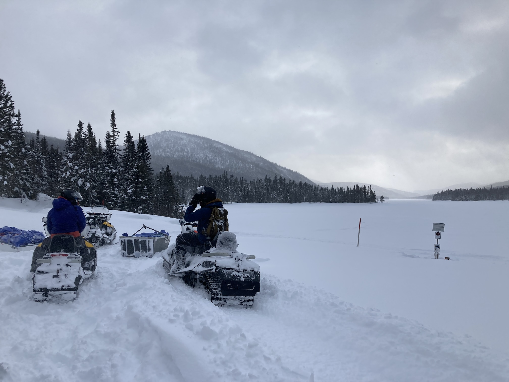

Winter School
Join early-career and experienced limnologists at Trout Lake Biological Station in Wisconsin for a comprehensive Winter Limnology workshop (Including travel days, March 10-15, 2024). Gain experience in conducting winter field research and K-12 outreach, expand your professional network, and learn how you can participate in a new NSF-funded Team Science winter limnology project.
General Overview:
Location: University of Wisconsin Trout Lake Field Station
Dates: March 11-14, 2024 (with March 10 and 15 as travel days).
Accommodations & meals: Accommodations in dorm-style cabins at the field station. Meals will be provided.
About
Winter presents unique challenges to limnological research and science outreach. These challenges have slowed progress in understanding winter limnology and how winter conditions affect lakes through the full annual cycle. Rapidly changing winter climate and growing recognition of the ‘winter knowledge gap’ in limnology are attracting more and more researchers to study ice covered lakes.
Unfortunately, few of us are trained for the unique challenges of limnological sampling on frozen lakes, including ice safety, operating standard limnological gear in subzero temperatures, collecting samples from under snow and ice cover, and even dressing for the cold, windy, and wet conditions winter limnologists routinely encounter. In addition, much of recent winter limnology research is conducted by individual research teams focused on a small number of systems and domain-specific questions. This approach makes it difficult to discern generalizable patterns and test comprehensive hypotheses about the way winter conditions shape the ecology of diverse lakes.


The National Science Foundation recently funded two Winter Limnology projects (Advancing a comprehensive model of year-round ecosystem function in seasonally frozen lakes through networked science, award # 2306885 and On thin ice- implications of shorter winters for the future of freshwater phytoplankton phenology and function, award # 2306894). Both projects seek to rapidly advance understanding of winter limnology through large-scale, collaborative Team Science, involving dozens of research groups in collecting standardized samples across diverse lakes. To support these projects, we are hosting a Limnology Winter School event for early career and experienced limnologists interested in learning how to conduct winter research, expand their professional networks, and join us as collaborators on our Team Science projects.
Participants in the Limnology Winter School will join a team of experienced winter limnologists and outreach specialists at UW-Madison’s scenic Trout Lake Biological Station for 4 days of hands-on field work and discussions. Topics will include:
Planning and executing winter field operations
Ice safety and rescue
Collecting standard limnological data and samples under ice
Planning and conducting public outreach during winter
Discussion of key open questions and novel hypotheses for winter limnology
Best practices in Team Science
Transportation, accommodations, and meals are fully covered for US and Canada-based participants through stipends on a need basis. We especially encourage participation by researchers interested in joining our Team Science effort (involving collecting winter and summer samples from their local lakes), early career researchers (graduate students, postdocs, pre-tenure faculty), and scientists from historically underrepresented backgrounds in the limnological sciences. No specialized winter gear beyond cold-weather clothing is needed to participate.
Workshop Details
Expectations and Cost Offsets
Participants are expected to:
Be fully engaged in workshop events listed in the agenda, for the full workshop, and able to set aside regular work distractions
Continue to engage collaboratively in writing products/manuscripts after the workshop ends
Abide by the workshop code of conduct
Complete some pre-workshop activities prior to arriving
Cost Offsets
Participant travel, accommodation, and meal costs for US and Canada-based participants will be reimbursed through a stipend on a needs basis. Requests for funding can be indicated in the online application.
Preliminary program


Sunday, March 10:
Travel day, arrive at Trout Lake
Welcome Dinner
Introductions and networking
Monday, March 11:
Breakfast
Introduction to workshop and the Winter Limnology Network
Planning winter field operations: clothing, gear, access, safety considerations
Lunch
Ice safety and rescue- theory and practice
Dinner
Discussion and networking: Objectives of the Winter Limnology Network
Tuesday, March 12:
Breakfast
Winter limnology field practice
Lunch
Winter limnology field practice
Dinner
Discussion and networking: Overcoming challenges of winter sampling
Wednesday, March 13:
Breakfast
Winter outreach with local middle school students
Lunch
Discussions and working groups
Addressing novel hypotheses using the Winter Limnology Network
Dinner
Discussion and networking: Addressing novel hypotheses using the Winter Limnology Network



Thursday, March 14:
Breakfast
Discussions and working groups:
Addressing novel hypotheses using the Winter Limnology Network
Maintaining momentum for collaboration
Lunch
Discussions and working groups: Maintaining momentum for collaboration
Reporting out
Dinner
Summary and networking
Friday, March 15:
Breakfast
Departure, travel day
Application and Registration Information:
Spaces in the workshop are limited. Applicants will be prioritized based on interest in participation in follow up sampling through the Winter Research Network, applicant career stage, and self-described status as members of groups historically underrepresented in limnology.
Applications are due on January 15, 2024. Successful applicants will be contacted by January 22, 2024.
Apply here!
Workshop support:
This workshop is supported by NSF project # 2306885 “Advancing a comprehensive model of year-round ecosystem function in seasonally frozen lakes through networked science”.